Serveur Active Directory
Objectif et environnement
Objectif
L’installation d’un Active Directory sur Windows Server 2019.
Environnement
Matériels :
Dell PowerEdge r240 avec Proxmox 7.1-7
Adressage des VMS :
Réseaux : 172.28.0.0/16
Active Directory sur Windows serveur 2019 : 172.28.1.200/16
Processus
Fixer l’adresse IP
Avant d’installer Active Directory, j’ai fixé l’adresse IP du serveur somme suite
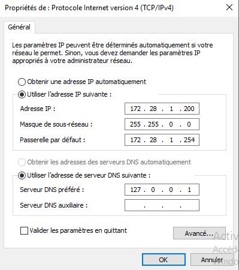
L’installation Active Directory
Dans la Gestion de serveur / Tableau de bord / Gérer / Ajouter des rôles et fonctionnalités
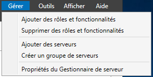
J’ai choisi installation basée sur un rôle
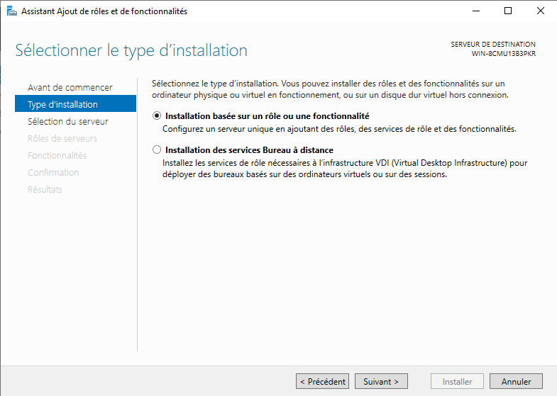
Choix du serveur

Choix rôle AD DS (Active Directory Domain Service)
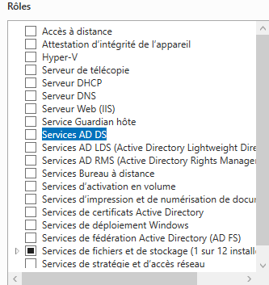
J’ai validé l’ajout du rôle
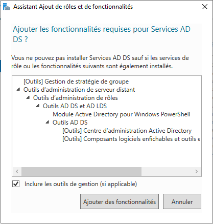
J’ai laissé par défaut le choix des fonctionnalités
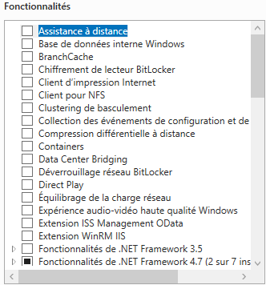
Début de l’installation
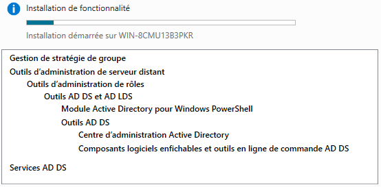
Promouvoir le serveur en contrôleur de domaine
Une fois installé, j’ai promu le serveur en contrôleur de domaine
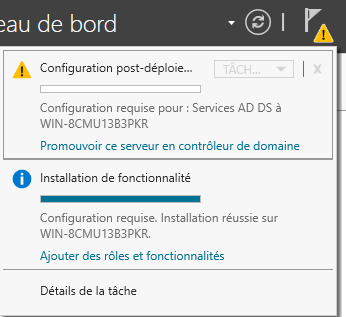
Le nom du domaine racine est t2sr.io
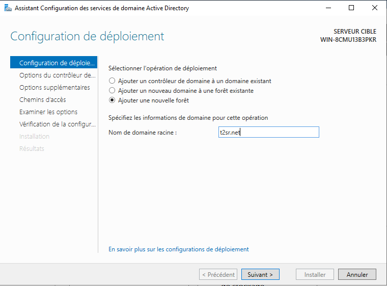
J’ai décoché serveur DNS (n’est pas encore configuré) et renseigné le mot de passe DSRM.
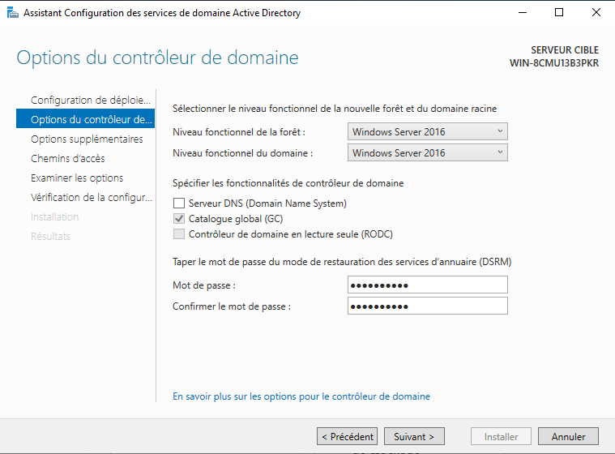
Le nom de domaine NetBIOS renseigné automatiquement
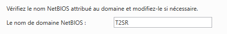
J’ai laissé par défaut l’emplacement de la base de données AD DS
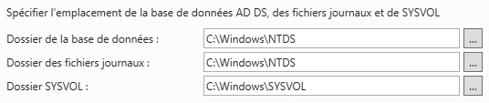
Après vérification, j’ai lancé l’installation
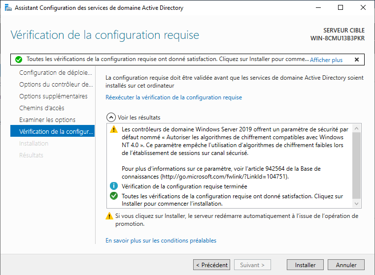
A la fin de l’installation le serveur redémarre.
Création des utilisateurs
Créer les utilisateurs manuellement
Outils d’administration / Utilisateurs et ordinateurs Active Directory / Users / Nouveau / Utilisateur
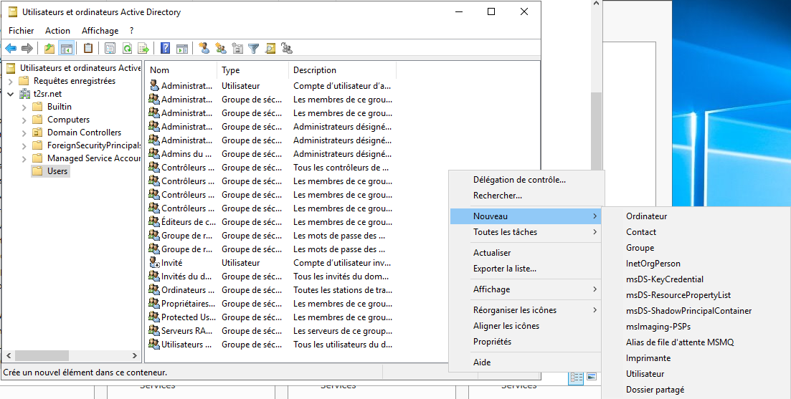
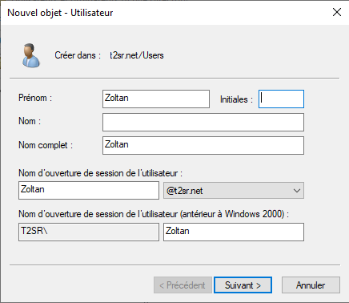
J’ai renseigné un mot de passe par défaut que l’utilisateur doit changer lors de la première connexion.
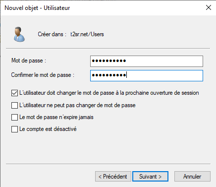
Créer automatiquement les utilisateurs à partir d’un fichier csv.
J’ai créé avec Microsoft Excel un tableau csv avec les stagiaires
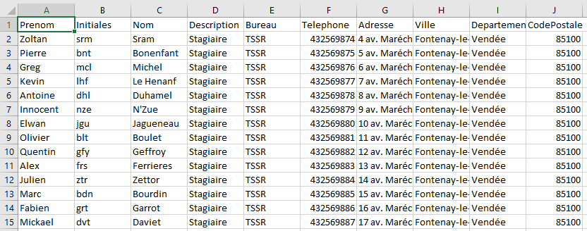
Ensuite j’ai créé un script PowerShell pour automatiser la création des utilisateurs.
Le script :
\$CSVFile = "C:\Users\Administrateur\Desktop\Annuaire.csv"
\$CSVData = Import-CSV -Path \$CSVFile -Delimiter ";" -Encoding UTF8
Foreach(\$Utilisateur in \$CSVData){
\$Prenom = \$Utilisateur.Prenom
\$Initiales = \$Utilisateur.Initiales
\$Nom = \$Utilisateur.Nom
\$NomComplet = \$Utilisateur.NomComplet
\$Description = \$Utilisateur.Description
\$Telephone = \$Utilisateur.Telephone
\$Adresse = \$Utilisateur.Adresse
\$Ville = \$Utilisateur.Ville
\$Departement = \$Utilisateur.Departement
\$CodePostale = \$Utilisateur.CodePostale
\$Login = (\$Prenom).Substring(0,1) + "." + \$Nom
\$Email = "\$Login@t2sr.net"
\$MotDePasse = "Azerty123+"
\$Bureau = "T2SR"
\$Pays = "FR"
*\# Vérifier la présence de l'utilisateur dans l'AD*
if (Get-ADUser -Filter {SamAccountName -eq \$Login})
{
Write-Warning "L'identifiant \$Login existe déjà dans l'AD"
}
else
{
New-ADUser -Name "\$Prenom" \`
-GivenName "\$Prenom" \`
-Initials "\$Initiales" \`
-Surname "\$Nom" \`
-DisplayName "\$Prenom \$Nom" \`
-Description "\$Description" \`
-StreetAddress "\$Adresse" \`
-City "\$Ville" \`
-Country "\$Pays" \`
-OfficePhone "\$Telephone" \`
-PostalCode "\$CodePostale" \`
-SamAccountName "\$Login" \`
-UserPrincipalName "\$Login@t2sr.net" \`
-EmailAddress \$Email \`
-Office \$Bureau \`
-State \$Departement \`
-Path "OU=Utilisateurs,DC=t2sr,DC=net" \`
-AccountPassword(ConvertTo-SecureString \$MotDePasse
-AsPlainText -Force) \`
-ChangePasswordAtLogon \$true \`
-Enabled \$true
Write-Output "Création de l'utilisateur : \$Login (\$Prenom)"
}
}
Le résultat :
<img src="./media/image90.png"
style="width:4.09375in;height:2.14583in" />
<img src="./media/image91.png"
style="width:2.09172in;height:2.20833in" /><img src="./media/image92.png"
style="width:2.07292in;height:2.17368in" /><img src="./media/image93.png"
style="width:2.08625in;height:2.19761in" />
Installation du serveur DNS
Gestionnaire de serveur / Tableau de bord / Gérer / Ajouter des rôles et fonctionnalités
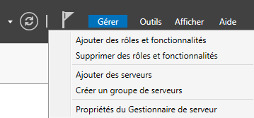
J’ai choisi serveur DNS puis installation
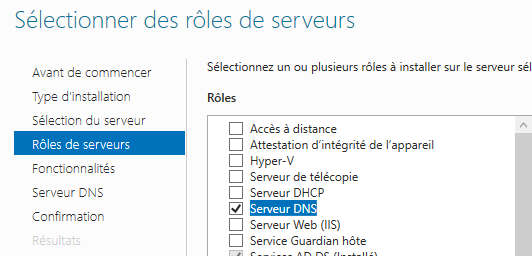
Une fois installé, j’ai configuré dans
Gestionnaire DNS > Zonz de recherche inversée > Nouvelle Zone
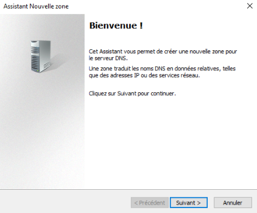
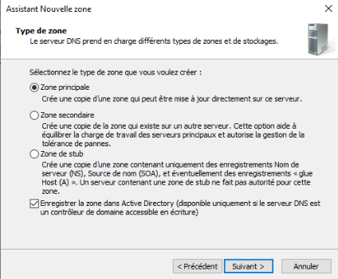
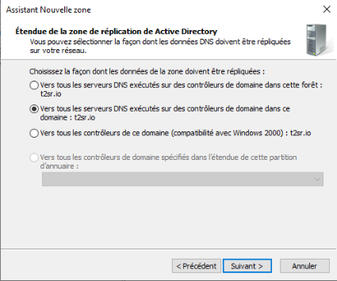
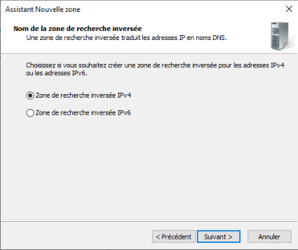
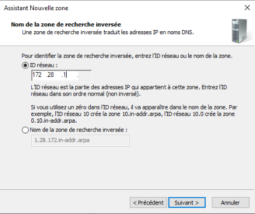
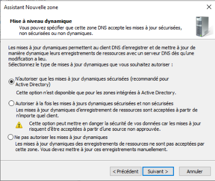
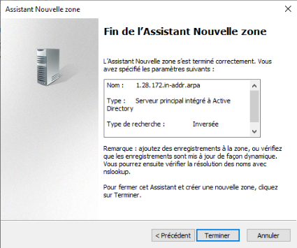
J’ai répété la manipulation deux fois pour les plages 2 et 3
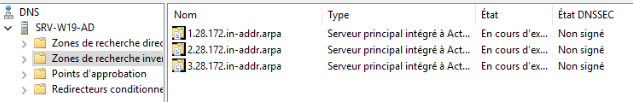
Joindre un client linux dans Active Directory
Installation des package nécessaires sur des distributions basées sur Debian
apt install realmd sssd sssd-tools libnss-sss libpam-sss adcli
samba-common-bin oddjob oddjob-mkhomedir packagekit -y
Installation des package nécessaires sur des distributions basées sur CentOS (FreePBX)
yum install realmd sssd sssd-tools libnss-sss libpam-sss adcli
samba-common-bin samba-common-tools oddjob oddjob-mkhomedir packagekit
-y
Vérifier que le domaine est joignable
realm discover t2sr.io
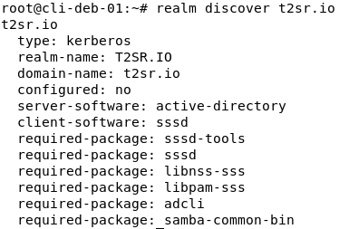
Joindre le serveur AD
realm join --user=Administrateur t2sr.io
Vérification sur l’AD l’ensemble des ordinateurs du domaine
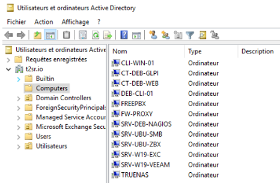
J’ai séparé dans deux UO les serveurs et les clients.
Serveurs
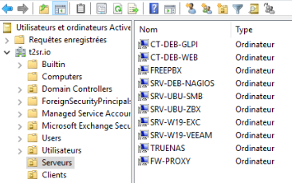
Clients
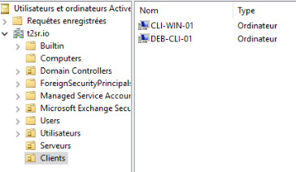
Groupes et utilisateurs
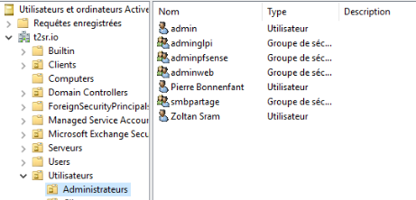
Conclusion
L’installation s’est correctement déroulée. La mise en place de l’Active Directory doit être le premier serveur à configurer.